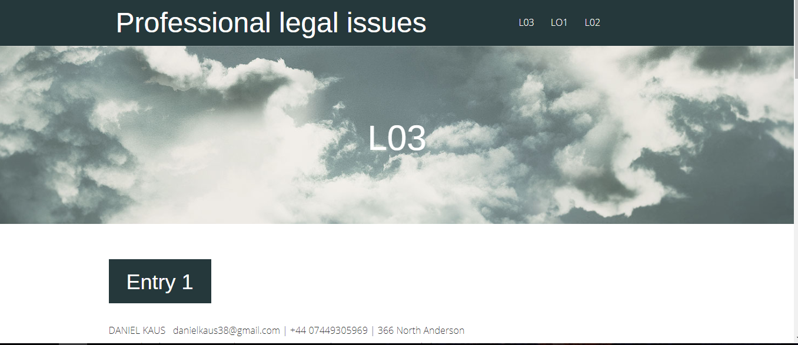

A young apprising web developer, graphic designer and photographer. Born in Poland and moved to the UK in 2007. Always had a passion for creating things such as art, models, photography, games etc. Finally chose to peruse the skills as a professional web developer. The interest of web developing has initially been seeded in the 2015. To make the idea of web developing a reality training, education and dedication are really important. He has decided to educate himself by attending courses that pushed him in knowledge and training. Developing skills as a web developer is like working in a field of learning and gaining new experiences. It is easy to feel overwhelmed with all of options, possibilities and compositions that surround you as an individual web developer. Never give up thought, you always are capable!
Photography
Web Development
Graphic Design
UI Design
UX Design
Art Design
Visual Art Design
The Desperados Project. I has challenged to create a website that would be used by Desperados as a festival website. It would have to be a website that would inform users about the event. The website would work on any device and would be responsive on every device. I made a website that was about promoting a surfing festival based in aberdeen at summer time.
Professional Legal Issues Wordpress Blog. I have gathered information about being a professional web developer. From working as a self employer to group working I have provided my research in a three part document.
BBC iPlayer web application. The focus of this project was to make a mobile responsive web application only. It's features are to provide shows, films and music to it's users. Heavily inspired by providers such as the official BBC iPlayer, Netflix and Spotify.